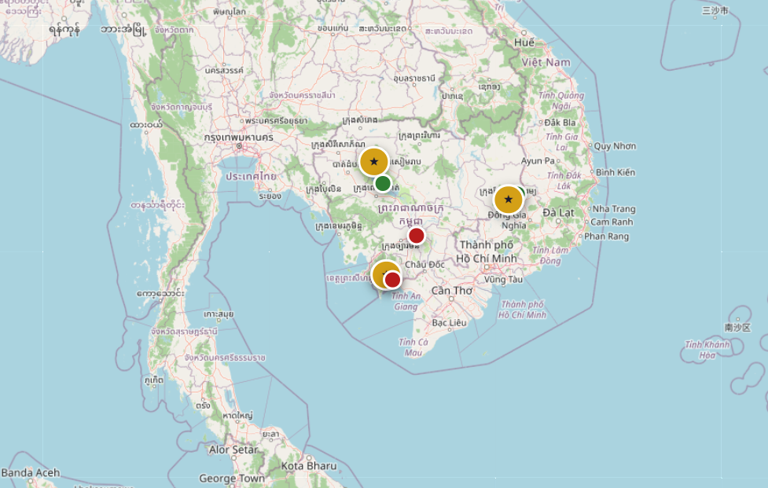

INTERACTIVE MAP
Tucked between Bokor Mountain and the Praek Tuek Chhu River, Kampot is the kind of place travelers come for one night and stay for a week. Colonial shophouses line the riverfront, fishing boats drift past at sunset, and the surrounding countryside is patterned with the famous Kampot pepper plantations a spice once reserved for European royalty.
A short drive away you'll find the abandoned hill station of Bokor, the salt fields of Kep, and the legendary Kep Crab Market, where blue swimmer crabs are stir-fried in green Kampot pepper sauce within minutes of being caught.
Legend
★ Featured province
● Famous attraction
● Nature & wildlife
